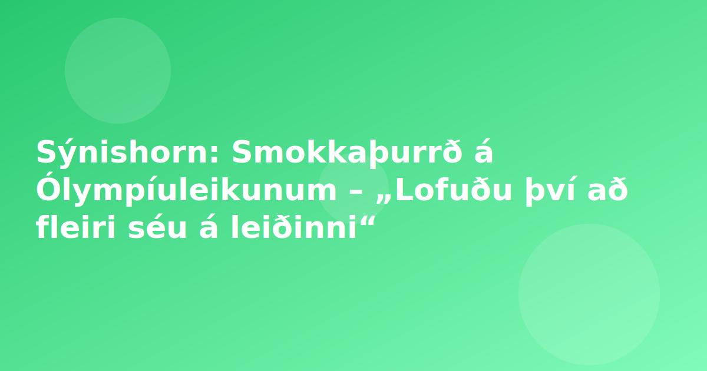

Fréttir
•
13.02.2026 · 1 mín lestur · Sýnishorn, Endursögn, RÚV
Sýnishorn: Smokkaþurrð á Ólympíuleikunum – „Lofuðu því að fleiri séu á leiðinni“
Endursögn byggð á heimild: Fríir smokkar á Vetrarólympíuleikunum kláruðust á mettíma í þetta sinn. Eftir þrjá daga af leikunum voru birgðirnar búnar. Keppendum hefur verið „lofað að fleiri séu á leiðinni en hver veit hvenær það verður,“ sagði nafnlaus keppandi við ítalska blaðið La Stampa. Skipuleggjendum hefur verið kennt um málið en talið er að undir 10.000 smokkar hafi verið til staðar á leikunum í ár. Til samanburðar voru um 300.000 smokkar í boði fyrir keppendur á Ólympíuleikunum í París 2024. Það þýða um tveir smokkar á hvern keppanda á dag. Magnið vanáætlað tífalt En á Vetrarólympíuleikunum í ár eru um 3.000 keppendur og þeir voru 10.500 í París. Því hefðu smokkarnir átt að vera um 100.000 en ekki undir 10.000. Metið var árið 2016 í Río de Janeiro en þá fengu keppendur um 450.000 smokka. Fyrsta árið sem smokkum var dreyft árið 1988 í Seoul í Suður-Kóreu voru um 8.500 smokkar fyrir keppendur. Það má því sannarlega tala um smokkaþurrð í Mílanó-Cortina í ár. Ætti ekki að vera vandræðalegt Héraðsstjóri Langbarðalands, Attilio Fontana, segir að það ætti ekkert að vera neitt feimnismál að tala um smokka. „Já, við gefum íþróttafólki í ólympíuþorpinu fría smokka. Ef sumum finnst þetta skrýtið þá virðist það vera svo að þau viti ekki af þessari viðurkenndu ólympísku gjörð. Þetta byrjaði árið 1988 í Seoul sem vitundarvakning fyrir ungt íþróttafólk og til að koma í veg fyrir kynsjúkdóma. Þetta er umræðuefni sem ætti ekki að gera neinn vandræðalegan,“ sagði Fontana á samfélagsmiðlum. Óvíst er hvort og hvenær íþróttafólk fær fleiri smokka á leikunum.

Þetta er sýnishorn fyrir HDL: endursögn byggð á opinni umfjöllun annarra miðla. Engin sjálfstæð staðfesting eða vettvangsvinna.
Í stuttu máli
- Smokkaþurrð á Ólympíuleikunum – „Lofuðu því að fleiri séu á leiðinni“
Það sem er óljóst
- Nánari upplýsingar liggja ekki fyrir í RSS-lýsingu einni og sér. - Staðfesting á staðreyndum krefst þess að fara í frumheimild.
Heimildir
- RÚV (2026-02-13): https://www.ruv.is/frettir/ithrottir/2026-02-13-smokkathurrd-a-olympiuleikunum-lofudu-thvi-ad-fleiri-seu-a-leidinni-466912/